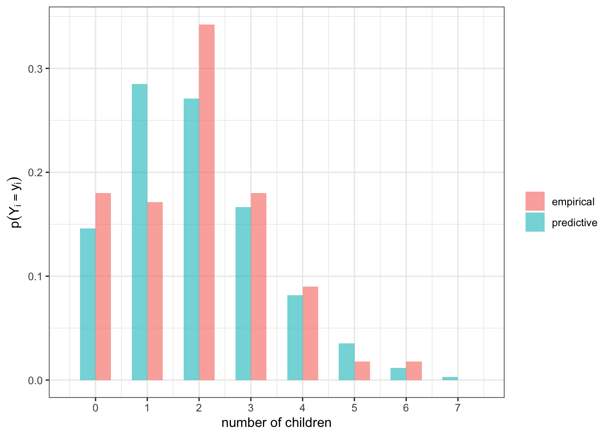
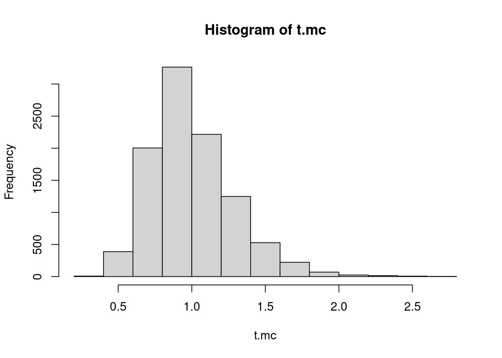

# load packages
library(tidyverse)
library(latex2exp)Prediction checks and Monte Carlo Error
Predictive distributions with Monte Carlo
Goal: evaluate our model both a priori and a posteriori i.e. before and after looking at the data.
Prior predictive distribution
We can use Monte Carlo to sample new observation, \(\tilde{y}\), from the prior predictive distribution
\[ p(\tilde{y}) = \int p(\tilde{y}|\theta)p(\theta) d\theta, \]
where we proceed by following the iterative procedure below
1. sample theta_i from the prior p(theta)
2. sample ytilde from p(ytilde | theta_i)
3. repeat steps 1 and 2- this can be useful to see if a prior for \(p(\theta)\) actually translate to reasonable prior beliefs about the data.
For \(p(\theta) = \text{gamma}(8,2)\), plot \(p(\tilde{y})\) assuming \(\tilde{y} | \theta \sim \text{Poisson}(\theta)\).
Posterior predictive distribution
We can also sample \(\tilde{y}\) from the posterior predictive distribution,
\[ p(\tilde{y} | y_1, \ldots y_n) = \int p(\tilde{y}|\theta) p(\theta|y_1, \ldots, y_n)d\theta, \]
where the procedure is the same as before, except step 1 is replace with sampling \(\theta\) from the posterior \(p(\theta | y_1,\ldots, y_n)\).
The resulting sequence \(\{(\theta^{(1)}, \tilde{y}^{(1)}), \ldots, (\theta^{(S)}, \tilde{y}^{(S)})\}\) constitutes \(S\) independent samples from the joint posterior of \((\theta, \tilde{Y})\). The sequence \(\{\tilde{y}^{(1)}, \ldots, \tilde{y}^{(S)}\}\) constitutes \(S\) independent samples from the marginal posterior distribution of \(\tilde{Y}\), aka the posterior predictive distribution.
Posterior predictive model checking
We can assess the fit of a model by comparing the posterior predictive distribution to the empirical distribution.
Example: is our Poisson model flawed?
# load general social survey data
gss = read_csv("https://sta360-fa23.github.io/data/gss.csv")y1 = gss$CHILDS[gss$FEMALE == 1 & gss$YEAR >= 1990 & gss$AGE == 40 &
gss$DEGREE < 3 ]
y1 = y1[!is.na(y1)]
n = length(y1)We are examining the number of children \(Y_i\) belonging to \(n=\) 111 40 year old women surveyed 1990 or later without a bachelor’s. These data come from the general social survey.
Suppose
\[ \begin{aligned} Y_i | \theta & \sim \text{Poisson}(\theta)\\ \theta & \sim \text{gamma}(2, 1). \end{aligned} \] The empirical and predictive distributions of the data are both plotted below.

set.seed(123)
# posterior predictive distribution
ytotal = sum(y1)
a = 2 ; b = 1
N = 10000
theta.post.mc = rgamma(N, ytotal + a, b + n)
y1.mc = rpois(N, theta.post.mc)
# data
df = data.frame(y1) # empirical
df2 = data.frame(y1.mc) # post predictive
# make plot
df %>%
ggplot(aes(x = y1)) +
geom_bar(aes(x = y1 + .15, y = (..count..)/sum(..count..),
fill = "empirical"), alpha = 0.6, width = 0.3) +
geom_bar(data = df2,
aes(x = y1.mc -.15, y = (..count..) / sum(..count..),
fill = "predictive"), alpha = 0.4, width = 0.3) +
labs(x = "number of children",
y = TeX("$p(Y_i = y_i)$"),
fill = "") +
scale_x_continuous(breaks = c(0:7), labels = c(0:7),
limits = c(-.5,7.5)) +
theme_bw()Let \(\mathbf{y}\) be a vector of length 111. Let \(t(\mathbf{y})\) be the ratio of \(2\)s to \(1\)s in \(\mathbf{y}\). For our observed data, this test statistic \(t(\mathbf{y}_{obs}) = 38 / 19 = 2\). What is the tail probability \(p(t(\tilde{\mathbf{Y}}) \geq t(\mathbf{y}_{obs}))\) under the posterior predictive distribution?
set.seed(123)
t.mc = NULL
for (i in 1:10000) {
theta1 = rgamma(1, ytotal + a, b + n) # draw 1 theta from posterior
y1.mc = rpois(n, theta1) # draw y from post pred of n = 111
t.mc = c(t.mc,
sum(y1.mc == 2) / sum(y1.mc == 1))# compute t
}
hist(t.mc)
mean(t.mc >= 2)[1] 0.0059Monte Carlo error
How many values should we simulate?
Recall: expected values are integrals, and integrals are expected values. Since central limit theorem (CLT) deals with expected values…
Recall: CLT states that if \(\theta_i |\vec{y}\) iid with mean \(\theta\) and finite variance \(\sigma^2\), for \(i \in \{1, \ldots, N\}\), then the sample mean
\[ \bar{\theta} \sim N(\theta, \frac{\sigma^2}{N} ). \]
- How to remember this/show this? Offline notes.
So to estimate \(\theta\), we can generate \(\bar{\theta}\) by Monte Carlo simulation and report a confidence interval using quantiles of the normal given above in conjunction with the Monte Carlo standard error \(\frac{\hat{\sigma}}{\sqrt{N}}\)
This means we get convergence at the rate \(\mathcal{O}\left(\frac{1}{\sqrt{N}}\right)\) regardless of the dimension of the integral!
Recall:
sd1 = pnorm(1) - pnorm(-1)
sd2 = pnorm(2) - pnorm(-2)
sd3 = pnorm(3) - pnorm(-3)- a 0.6826895% confidence interval can be obtained using \(\pm 1\cdot \hat{\sigma}/\sqrt{N}\)
- a 0.9544997% confidence interval can be obtained using \(\pm 2\cdot \hat{\sigma}/\sqrt{N}\)
- a 0.9973002% confidence interval can be obtained using \(\pm 3\cdot \hat{\sigma}/\sqrt{N}\)
Toy example
Let \(\phi\) be the random variable of interest.
Assume the posterior distribution \(\phi| data \sim \text{binomial}(20, 0.4)\)
set.seed(123)
# binomial(n, p)
n = 20
p = 0.4
# exact posterior mean, variance, sd of a binomial(n, p)
EPhi = n*p # 20*.4 = 8
VarPhi = n*p*(1-p) # 20*.4*.6 = 4.8
sdPhi = sqrt(VarPhi) # 2.19089
# Monte Carlo sample of size N
N = 100
PhiSamples = rbinom(N, size = n, prob = p)
# Empirical approximation of posterior mean, var, sd
PhiBar = mean(PhiSamples)
PhiVar = var(PhiSamples)
PhiSigma = sd(PhiSamples) # = sqrt(sum((xSamples - xbar)^2) / (N -1))
se = PhiSigma / sqrt(N)
lb = round(PhiBar - (2*se), 3)
ub = round(PhiBar + (2*se), 3)For N = 100 Monte Carlo samples, The posterior mean of \(\phi\) is \(\bar{\phi} =\) 8.01 with 95% confidence interval (7.57 8.45).
Above we estimate \(Var(\phi)\) to be 4.838 and the standard error for \(N = 100\) was 0.22.
If you wanted to state \(p(\phi \in (\hat{\phi} \pm 0.01)) = 0.95\), how large would \(N\) have to be?
Check your answer by adjusting \(N\) above.